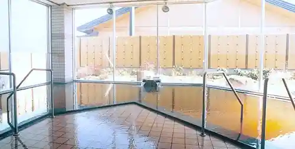
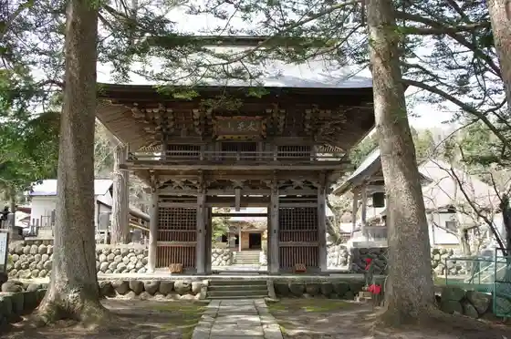
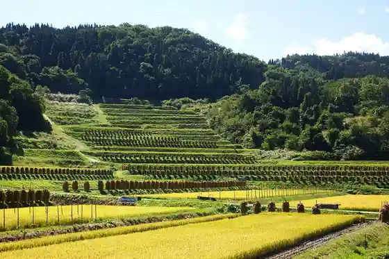

Yamanobe Onsen Hoyo Center
Yamanobe, Yamagata · 023-664-7777 · Official / source link

Ankokuji / Ankokuji Garden
Yamanobe, Yamagata · 023-664-5305 · Official / source link

Dai Warabi no Tanada
Yamanobe, Yamagata · 023-667-1106 · Official / source link

Nitto Kan Sudamari
Yamanobe, Yamagata · 090-6684-8636 · Official / source link
Tamamushi Numa
Yamanobe, Yamagata · 023-667-1110 · Official / source link
Orientarukapetto
Yamanobe, Yamagata · 023-664-5811 · Official / source link
Adachi Mine Ichiro Hakase no Seika to Hi
Yamanobe, Yamagata · 023-667-1115 · Official / source link
Kenmin Forest
Yamanobe, Yamagata · 023-666-2116 · Official / source link
Hataya Joshi
Yamanobe, Yamagata · 023-667-1110 · Official / source link
Chokaisan / Kotori Umiyama (Yamanobe)
Yamanobe, Yamagata · 023-667-1110 · Official / source link
Yamanobe Furusato Museum
Yamanobe, Yamagata · 023-664-5033 · Official / source link
Yamagata Gorufu Kurabu
Yamanobe, Yamagata · 023-666-2221 · Official / source link
Atago Yama / Atago Shrine / Osugi
Yamanobe, Yamagata · 023-667-1110 · Official / source link
Yamanobe Joshi
Yamanobe, Yamagata · 023-667-1115 · Official / source link
Kannon Yama Jofuku Tera (Soto Shu) / Saijo Sanju San Kannon Dai 13 Ban Mikawa Village Kannon
Yamanobe, Yamagata · Official / source link
Ryujin Mizu
Yamanobe, Yamagata · 023-667-1110 · Official / source link
Mizu Basho Gunsei Chi (Gaku Hara)
Yamanobe, Yamagata · 023-666-2116 · Official / source link
Kyu Yamanobe Jinya Genkan
Yamanobe, Yamagata · 023-667-1115 · Official / source link
Kame no Ko (Yusui)
Yamanobe, Yamagata · 023-667-1110 · Official / source link
Furusato Koryu Center (Agarasshai)
Yamanobe, Yamagata · 023-665-8582 · Official / source link
Goban Omiki
Yamanobe, Yamagata · 023-667-1110 · Official / source link
Shirataka Yama
Yamanobe, Yamagata · 023-667-1110 · Official / source link